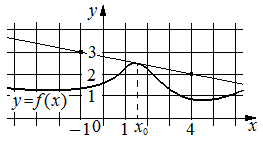

На рисунке изображены график функции и касательная к нему в точке с абсциссой Найдите значение производной функции в точке

КЭС: 4.1 Производная функции. Производные элементарных функций; 4.2 Применение производной к исследованию функций на монотонность и экстремумы. Нахождение наибольшего и наименьшего значения функции на отрезке